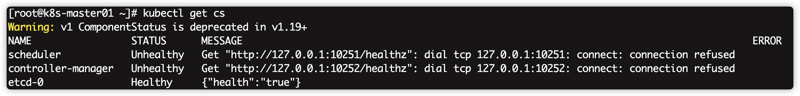

确��个节点上 MAC 地�和 product_uuid 的唯一性
ip link 或 ifconfig -a æ�¥è�·å�–网络æ�¥å�£çš„ MAC 地å�€sudo cat /sys/class/dmi/id/product_uuid 命令对 product_uuid æ ¡éªŒä¸€èˆ¬æ�¥è®²ï¼Œç¡¬ä»¶è®¾å¤‡ä¼šæ‹¥æœ‰å”¯ä¸€çš„地å�€ï¼Œä½†æ˜¯æœ‰äº›è™šæ‹Ÿæœºçš„地å�€å�¯èƒ½ä¼šé‡�å¤�。 Kubernetes使用这些值æ�¥å”¯ä¸€ç¡®å®šé›†ç¾¤ä¸çš„节点。 如æ�œè¿™äº›å€¼åœ¨æ¯�个节点上ä¸�唯一，å�¯èƒ½ä¼šå¯¼è‡´å®‰è£…失败。
IP地å�€ | 角色 | CPU | å†…å˜ | 主机å��（hostname） |
172.16.2.246 | master and etcd | 4 | 8 | k8s-master01 |
172.16.2.247 | work node | 4 | 8 | k8s-work01 |
æ“�作系统 | ç³»ç»Ÿå†…æ ¸ç‰ˆæœ¬ | Kubernetes版本 | docker版本 | kubectl版本 | kubeadm版本 | kubelet版本 |
CentOS7.9.2009 | 5.10.7 | 1.19.7 | 19.03.9 | 1.19.7 | 1.19.7 | 1.19.7 |
æ ¹æ�®æœ�务器å®�é™…å��称替æ�¢$masterã€�$node的值
hostnamectl set-hostname $master
hostnamectl set-hostname $node
注�，hosts文件�常�� 修改�置文件
vi /etc/hosts
æ·»åŠ ä»¥ä¸‹å†…å®¹
172.16.2.246 k8s-master01
172.16.2.247 k8s-work01
systemctl stop firewalld
systemctl disable firewalld
swapoff -a
sed -i 's/.*swap.*/#&/' /etc/fstab
setenforce 0
sed -i "s/^SELINUX=enforcing/SELINUX=disabled/g" /etc/sysconfig/selinux
sed -i "s/^SELINUX=enforcing/SELINUX=disabled/g" /etc/selinux/config
sed -i "s/^SELINUX=permissive/SELINUX=disabled/g" /etc/sysconfig/selinux
sed -i "s/^SELINUX=permissive/SELINUX=disabled/g" /etc/selinux/config
modprobe br_netfilter
或者
cat <<EOF | sudo tee /etc/modules-load.d/k8s.conf
br_netfilter
EOF
cat > /etc/sysctl.d/k8s.conf <<EOF
net.ipv4.ip_forward = 1
net.bridge.bridge-nf-call-ip6tables = 1
net.bridge.bridge-nf-call-iptables = 1
EOF
sysctl -p /etc/sysctl.d/k8s.conf
ulimit最大打开数和systemctl管�的�务文件最大打开数echo "* soft nofile 655360" >> /etc/security/limits.conf
echo "* hard nofile 655360" >> /etc/security/limits.conf
echo "* soft nproc 655360" >> /etc/security/limits.conf
echo "* hard nproc 655360" >> /etc/security/limits.conf
echo "* soft memlock unlimited" >> /etc/security/limits.conf
echo "* hard memlock unlimited" >> /etc/security/limits.conf
echo "DefaultLimitNOFILE=1024000" >> /etc/systemd/system.conf
echo "DefaultLimitNPROC=1024000" >> /etc/systemd/system.conf
cat <<EOF > /etc/yum.repos.d/kubernetes.repo
[kubernetes]
name=Kubernetes
baseurl=https://mirrors.aliyun.com/kubernetes/yum/repos/kubernetes-el7-x86_64/
enabled=1
gpgcheck=1
repo_gpgcheck=1
gpgkey=https://mirrors.aliyun.com/kubernetes/yum/doc/yum-key.gpg https://mirrors.aliyun.com/kubernetes/yum/doc/rpm-package-key.gpg
EOF
yum install -y conntrack ipvsadm ipset jq sysstat curl iptables libseccomp bash-completion yum-utils device-mapper-persistent-data lvm2 net-tools conntrack-tools vim libtool-ltdl
Kubernetes是分布å¼�的，å�„个节点系统时间需è¦�å�Œæ¥å¯¹åº”上。
yum install chrony –y
systemctl enable chronyd.service && systemctl start chronyd.service && systemctl status chronyd.service
chronyc sources
é…�ç½®sshäº’ä¿¡ï¼Œé‚£ä¹ˆèŠ‚ç‚¹ä¹‹é—´å°±èƒ½æ— å¯†è®¿é—®ï¼Œæ–¹ä¾¿æ—¥å��执行自动化部署. æ¯�å�°æœºå™¨æ‰§è¡Œè¿™ä¸ªå‘½ä»¤ï¼Œä¸€è·¯å›�车å�³å�¯
ssh-keygen
å°†master上的公钥拷è´�到其他节点，替æ�¢nodeå��称,这里需è¦�å�Œæ„�输入yes和密ç �
ssh-copy-id $node
�考：docker安装
这一æ¥æ˜¯æ‰€æœ‰èŠ‚点都得安装（包括node节点），å�¯ä»¥ 工具说æ˜�：
查询kube系列工具的版本�
yum list `kubeadm` --showduplicates | sort -r`
安装kube系列工具
yum install -y kubelet-1.19.7 kubeadm-1.19.7 kubectl-1.19.7 --disableexcludes=kubernetes
systemctl enable kubelet && systemctl start kubelet
systemctl enable --now kubelet
kuebeadm config images list
kubeadm.conf文件kubeadm config print init-defaults > kubeadm.conf
注æ„�这个é…�置文件默认会ä»�googleçš„é•œåƒ�仓库地å�€k8s.gcr.io下载镜åƒ�，如æ�œä½ 没有科å¦ä¸Šç½‘，那么就会下载ä¸�æ�¥ã€‚å› æ¤ï¼Œæˆ‘们通过下é�¢çš„方法把地å�€æ”¹æˆ�国内的，比如用阿里的。
替�镜�仓库地�
sed -i 's!imageRepository: k8s.gcr.io!imageRepository: registry.aliyuncs.com/google_containers!g' kubeadm.conf
替�版本�
sed -i "s/kubernetesVersion: .*/kubernetesVersion: v1.19.7/g" kubeadm.conf
下载镜�
kubeadm config images pull --config kubeadm.conf
修改镜åƒ�å‰�缀脚本 通过脚本将registry.aliyuncs.com开头的镜åƒ�é‡�命å��为k8s.gcr.io，或者手动通过docker tagå‘½ä»¤ã€‚è¿™æ ·å®‰è£…ç¨‹åº�æ‰�能识别到。
vi image-rename.sh
æ·»åŠ ä»¥ä¸‹å†…å®¹
#!/bin/bash
images=(kube-apiserver:v1.19.7 kube-controller-manager:v1.19.7 kube-scheduler:v1.19.7 kube-proxy:v1.19.7
pause:3.2 etcd:3.4.13-0 coredns:1.7.0)
for imageName in ${images[@]} ; do
docker tag registry.aliyuncs.com/google_containers/$imageName k8s.gcr.io/$imageName
docker rmi registry.aliyuncs.com/google_containers/$imageName
done
检查镜�
docker image ls
kubeadm init�始化master节点kubeadm init --kubernetes-version=v1.19.7 --pod-network-cidr=192.168.0.0/16 --apiserver-advertise-address=172.16.2.246
åˆ�始化æˆ�功å��，/etc/kubernetes/ 会生æˆ�下é�¢æ–‡ä»¶,å�Œæ—¶æœ€å��会生æˆ�一å�¥è¯�,这个我们记录下,åˆ°æ—¶å€™æ·»åŠ node的时候è¦�用到。
kubeadm join 172.16.2.246:6443 --token osvv1g.7hlo28nnvgdcodiu \
--discovery-token-ca-cert-hash sha256:a19172e1f2e029b742a8c74391522fc241fde587f511e098abd17aad39c95176
�置kubectl命令
mkdir -p /root/.kube
cp /etc/kubernetes/admin.conf /root/.kube/config
执行��pods列表命令，查看相关状�
kubectl get pods --all-namespaces
在安装网络之å‰�,集群DNS (CoreDNS)å°†ä¸�会å�¯åŠ¨,处äº�Pending状æ€�，这个先ä¸�管。 我们å�¯ä»¥æ‰§è¡Œkubectl get cs查看集群的å�¥åº·çŠ¶æ€�，会看到集群有unhealthy的状æ€�，出ç�°è¿™ç§�情况是kube-controller-manager.yamlå’Œkube-scheduler.yaml设置的默认端å�£æ˜¯0，在文件ä¸æ³¨é‡Šæ�‰å°±å�¯ä»¥äº†ã€‚（æ¯�å�°master节点都è¦�执行æ“�作） 
port=0所在行vim /etc/kubernetes/manifests/kube-scheduler.yaml �考内容如下:
apiVersion: v1
kind: Pod
metadata:
creationTimestamp: null
labels:
component: kube-scheduler
tier: control-plane
name: kube-scheduler
namespace: kube-system
spec:
containers:
- command:
- kube-scheduler
- --authentication-kubeconfig=/etc/kubernetes/scheduler.conf
- --authorization-kubeconfig=/etc/kubernetes/scheduler.conf
- --bind-address=127.0.0.1
- --kubeconfig=/etc/kubernetes/scheduler.conf
- --leader-elect=true
# - --port=0
image: k8s.gcr.io/kube-scheduler:v1.19.7
imagePullPolicy: IfNotPresent
livenessProbe:
failureThreshold: 8
httpGet:
host: 127.0.0.1
path: /healthz
port: 10259
scheme: HTTPS
initialDelaySeconds: 10
ç•¥...
port=0所在行vim /etc/kubernetes/manifests/kube-controller-manager.yaml �考内容如下:
apiVersion: v1
kind: Pod
metadata:
creationTimestamp: null
labels:
component: kube-controller-manager
tier: control-plane
name: kube-controller-manager
namespace: kube-system
spec:
containers:
- command:
- kube-controller-manager
- --allocate-node-cidrs=true
- --authentication-kubeconfig=/etc/kubernetes/controller-manager.conf
- --authorization-kubeconfig=/etc/kubernetes/controller-manager.conf
- --bind-address=127.0.0.1
- --client-ca-file=/etc/kubernetes/pki/ca.crt
- --cluster-cidr=192.168.10.0/24
- --cluster-name=kubernetes
- --cluster-signing-cert-file=/etc/kubernetes/pki/ca.crt
- --cluster-signing-key-file=/etc/kubernetes/pki/ca.key
- --controllers=*,bootstrapsigner,tokencleaner
- --kubeconfig=/etc/kubernetes/controller-manager.conf
- --leader-elect=true
- --node-cidr-mask-size=24
# - --port=0
- --requestheader-client-ca-file=/etc/kubernetes/pki/front-proxy-ca.crt
- --root-ca-file=/etc/kubernetes/pki/ca.crt
- --service-account-private-key-file=/etc/kubernetes/pki/sa.key
- --service-cluster-ip-range=10.96.0.0/12
- --use-service-account-credentials=true
image: k8s.gcr.io/kube-controller-manager:v1.19.7
imagePullPolicy: IfNotPresent
livenessProbe:
failureThreshold: 8
httpGet:
host: 127.0.0.1
path: /healthz
port: 10257
scheme: HTTPS
initialDelaySeconds: 10
periodSeconds: 10
ç•¥...
��master��kubelet
systemctl restart kubelet
�次查看状�
kubectl get cs
网络æ�’件ç�°åœ¨æœ‰flannelã€�calicoç‰,我们æ¤æ¬¡é‡‡ç”¨Flannel
Flannelkubectl apply -f https://raw.githubusercontent.com/coreos/flannel/master/Documentation/kube-flannel.yml
kubectl get pods --all-namespaces